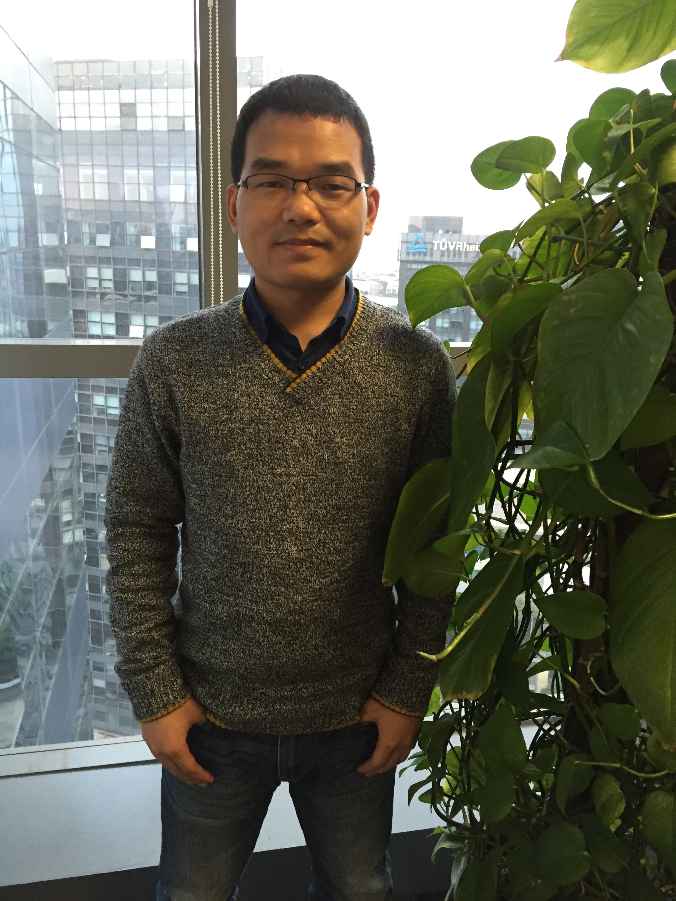
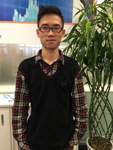

About Us
Daoling Song –the founder of ECOnnY project. Before joining Accenture, he spent three years in software outsourcing. Familiar with embedded development, he has independently designed and assembled a large 3D printer of 2.1M. During the college, he initiated FIL lab and managed it in Scrum way, owning one-year experience in team management. Love life, love travel, and play violin.
Wei Qian – ECOnnY junior data scientist, Ph.D, specializes in computational biology, data analytics and machine learning. She has recently received her Ph.D from Chinese Academy of Sciences. Now she joins Big Data team and is responsible for data modeling and analyzing. Be keen on both science and art, love traveling around the world, and pursue a better life full of fun!
Nan Qiao – ECOnnY senior data scientist, Ph.D, graduated from Chinese Academy of Sciences. After graduation, he worked at Novartis, one of the largest top pharmaceutical companies in the world, involved in cancer genome research and a large variety of drug development, and he also won a number of awards. As the first Data Science manager in Greater China, Nan joined Accenture targeting big data analytics and Internet of things. Nan has spent over seven years in data analytics and machine learning, and have several publications in top international scientific journals.
Chao Fang – ECOnnY product analyzer, at Accenture CIO, majoring in Information and Computing Science. She has a strong logical thinking and analytical skills, good at finding wonderful things in a simple life. During over one-year work at Accenture, she has participated in the project of DMS of Ferrero and SFA of Danone, responsible for developing, testing and assisting in project management. She never stops to improve herself, and now focuses on requirement analysis and automated testing.

Huihui Zhang – have fruitful experience in software development, especially in system tuning for Big Data. Be passionate and be creative.
Zhongying Zoe – ECOnnY UI Designer, at Accenture CIO. Familiar with User Interface Design both for Web and APP. Love design, love life, in the pursuit of freedom.
Zhuangzhuang Liu – ECOnnY mobile front-end developer. He has some experience in web layout and web design. Very interested in designing, he occasionally tries interface design on his own. He spent one year in SAP ABAP development, and then transferred to web front-end development. After joining Accenture, he also participated in WEB API development. Recently he’s got the chance to be exposed to Ionic Framework and AngularJS, and now is working on AngularJs 2.0 development. Love playing XBOB & PlayStation, and is learning playing drum.
Guodong Li – ECOnnY website developer, responsible for website building and designing. Good at such techniques as html, css and js. Love playing game and exploring inspiration from new technology communities.
